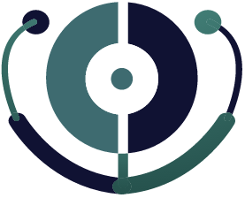

|  IntelliKare |
|
Caregiving of the Future |
|
Welcome to IntelliKare! We are excited to announce a new microblogging platform, IntelliKare. IntelliKare is a community of caregivers sharing information, providing support, and giving recommendations on all models of existing mechanized caregivers. Our goal is to provide a space for all who would like to engage in building a community that is strong in knowledge, resources, and support. To become one of the first community leaders who will help shape this amazing community, click the link below to find out how. We look forward to your participation and engagement as we create a space that will revolutionize the face of caregiving in the 21st Century. |
| - | - | - | Slideshare |
| GitHub | - | Quora | - | Stack Overflow |